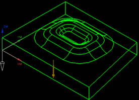
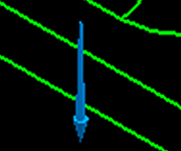

定义投影矢量和刀轴
投影矢量选项将决定驱动点如何投影到部件几何体上，驱动点总是沿选定矢量投影到部件几何体上。
投影矢量的方向将决定部件几何体的哪一侧要被刀具接触，刀具总是位于部件几何体中靠近投影矢量的一侧。
对于这个部件，投影矢量必须朝下以使刀具从上方靠近部件几何体。
点将沿投影矢量投影，以与箭头相反方向，从驱动几何体投影到部件表面。

-
在投影矢量组的矢量列表中，选择指定矢量。
-
点击矢量对话框
 。
。将打开矢量对话框。
-
点击矢量方位组中的反向，直到矢量朝向下，并且确定按钮可用。

-
点击确定以接受投影矢量。
将打开可变轮廓铣对话框。
-
在刀轴组的轴列表中，选择垂直于部件。